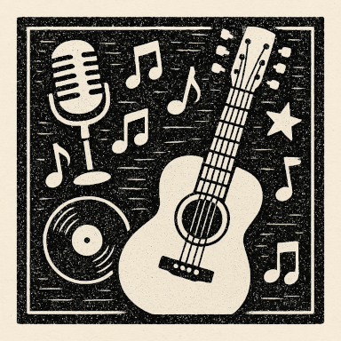

Music

Rhythm & Musical Expression
STEAM Education
Music Programs
Music programs inspire creativity, expression, and collaboration by exploring of rhythm, melody, and musical forms in a supportive environment. From learning to play a instrument to understanding music theory and composition, young learners develop both technical skills and appreciation for musical genres, styles, and traditions.
Areas of Focus
- Instrumental Music
- Vocal Music and Singing
- Music Theory and Composition
- World Music and Cultural Traditions
- Music Technology and Production
Music Listings
- New England Conservatory Summer Program Boston MA necmusic.edu
- Berklee City Music PULSE Program Boston MA pulse.berklee.edu
- Boston Youth Symphony Orchestras Summer Program Boston MA bysoweb.org
- University of Hartford Hartt Community Division West Hartford CT www.hartford.edu
- Project STEP Boston MA www.projectstep.org
- Community Music School of Springfield Springfield MA communitymusicschool.com
- South Shore Conservatory Hingham MA sscmusic.org
- Concord Community Music School Concord NH ccmusicschool.org
- Portland Conservatory of Music Portland ME pcm.org
- Providence Youth Arts Collaborative Providence RI pyac-ri.org
- Suzuki School of Newton MA suzukinewton.org
- Vermont Youth Orchestra Association Colchester VT vyo.org
- Middlesex Music Academy Middletown CT middlesex-music-academy.com
- Loulou's Music Together Natick & Framingham MA loulousmusictogether.com
- Greenwich Music Riverside CT greenwichmusic.com
- Suzuki Music Schools Westport & Orange CT suzukischools.org
- Merry Melody Music Academy Greater Boston MA merrymelodymusicacademy.com
- Berklee Institute for Accessible Arts Education Boston MA college.berklee.edu/BIAAE
- Community Music Center of Boston (CMCB) Boston MA cmcb.org
- Groton Hill Music Center Groton MA grotonhill.org
- Rhode Island Philharmonic Orchestra & Music School riphil.org
- Neighborhood Music School New Haven CT nmsnewhaven.org
- Manchester Community Music School Manchester NH mcmusicschool.org
- The Worcester Youth Orchestras (WYO) Worcester MA
- Joy of Music Program (JOMP) Worcester MA jomp.org
- Powers Music School Belmont MA powersmusic.org
- Pakachoag Music School Worcester MA pakmusic.org
- Brookline Music School Brookline MA bmsmusic.org
- Cape Symphony West Barnstable & Falmouth MA capesymphony.org